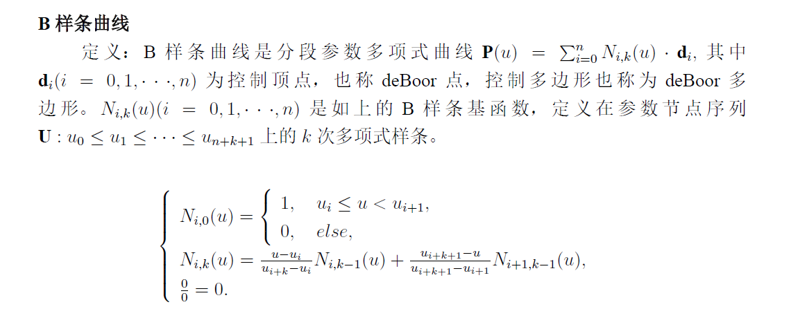
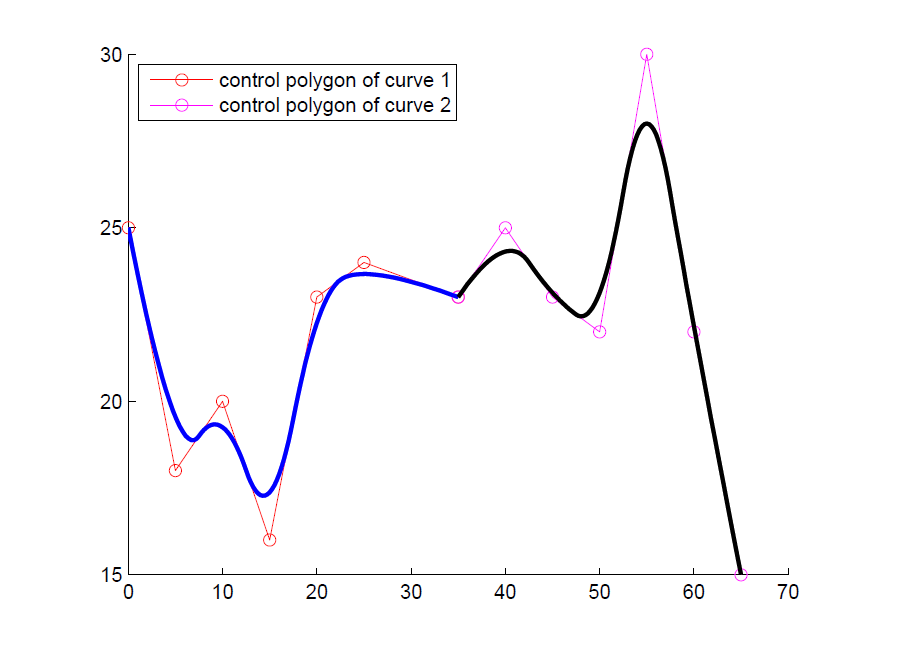
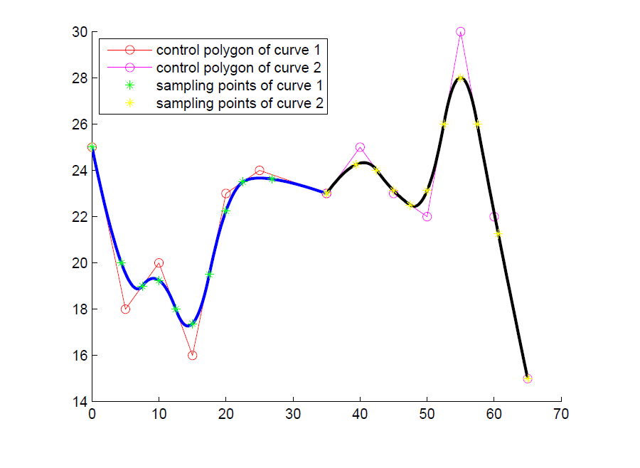
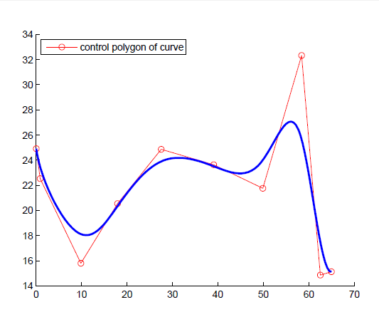
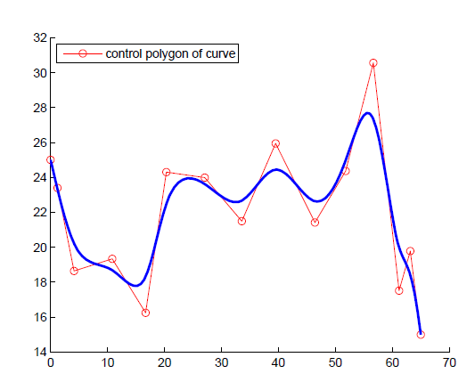
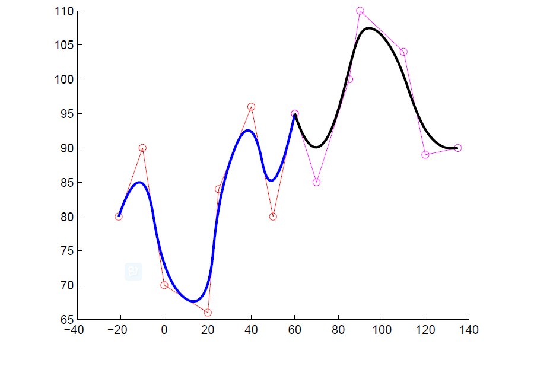
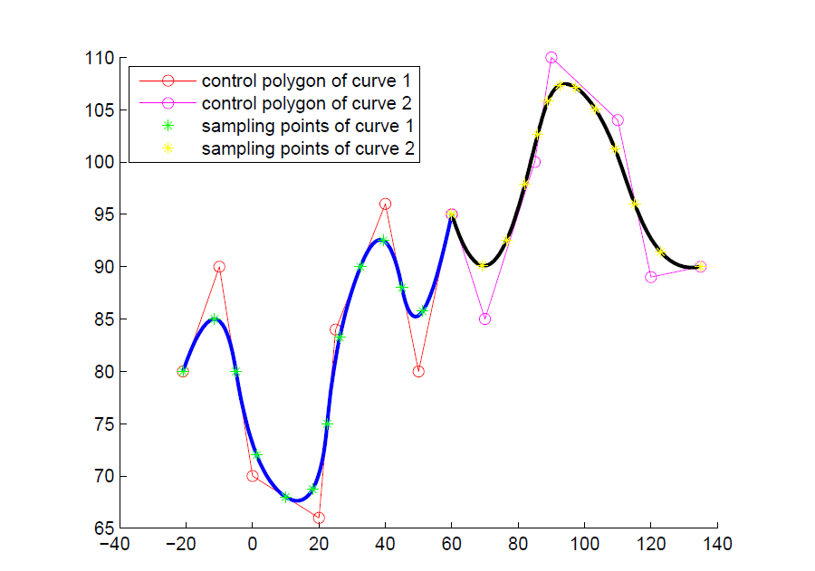

B样条曲线的近似合并
@杜小东
@朱平
B样条曲线定义
B样条曲线逼近
B样条曲线合并

控制顶点d
节点向量U
B样条曲线逼近
算法一：
- (1) 由最少的或一个小数目的控制顶点开始；
- (2) 用整体拟合方法对数据点拟合一条逼近曲线；
- (3) 检查逼近曲线对数据点的误差，如果误差处处小于给定误差界E，返回；否则，增加控制顶点的数目，转到步骤(2)。
算法二：
- (1) 由最大的或一个大数目的控制顶点开始，以致第一次逼近就满足精度误差E；
- (2) 用整体拟合方法对数据拟合一条逼近曲线；
- (3) 检查逼近曲线对数据点的误差是否处处满足精度误差E；
- (4) 如果不满足且步骤(3) 未执行过则转到步骤(1), 如(3) 已执过，返回上次结果；否则减少控制顶点的数目，转到步骤(2)。
B样条合并
- 节点采样
- 样点逼近
- 更多例子
原始曲线
节点向量：
- knots1=[0 0 0 0.2 0.4 0.6 0.8 1 1 1]
- knots2=[0 0 0 0.2 0.4 0.6 0.8 1 1 1]
- k1=[0 0.1 0.2 0.3 0.4 0.5 0.6 0.7 0.8 0.9 1]
- k2=[0 0.1 0.2 0.3 0.4 0.5 0.6 0.7 0.8 0.9 1]
采样图
样点逼近
- 逼近误差
- 控制顶点
- 节点向量
- 合并次数（由控制顶点和节点向量决定）


再来一个
原始曲线2
节点向量2：
- knots3=[0 0 0 1/6 1/3 1/2 2/3 5/6 1 1 1]
- knots4=[0 0 0 0 1/4 2/4 3/4 1 1 1 1]
- k3=[0 1/12 1/6 1/4 1/3 5/12 1/2 7/12 2/3 3/4 5/6 11/12 1]
- k4=[0 1/12 1/6 1/4 1/3 5/12 1/2 7/12 2/3 3/4 5/6 11/12 1]
采样图2


谢谢！！